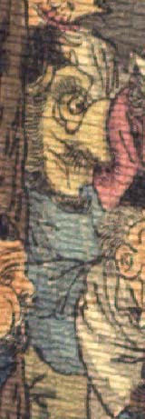

黄色っぽい肌の鬼。頭に黒い頭巾状のものをかぶり、額に2本角が生えている。眉毛が濃い。鼻はなく、口は蛸のように前に突き出ている。あごひげを生やしている。青い着物を着て、座っている。
著作者：J.Dautremer／出典：親書誌：U426_nichibunken_0123：Le vieillard et les démons／日付：2006／資源識別子：U426_nichibunken_0123_0003_0002
Copyright (c)2010- International Research Center for Japanese Studies, Kyoto, Japan. All rights reserved.